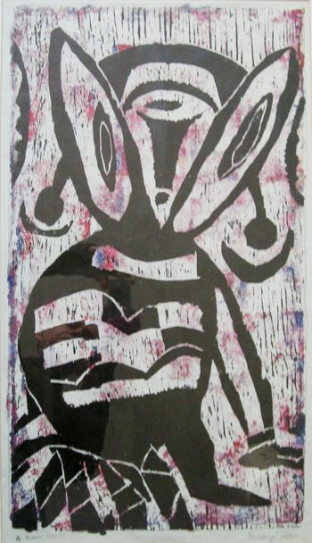

Peter Badejo
B. 1943
Artist Biography
Peter Badejo was born in 1943 in Nigeria. He was an early member of the influential Duro Ladipo Theatre in Oshogbo and honed his printmaking techniques through local art workshops. In 1967, he participated in a landmark group exhibition at the University of Ife, where he subsequently enrolled in 1968 to formally study theatre, painting, and music.
At the December 1968 Ife Festival, Badejo displayed his artistic range by exhibiting sculpture and prints alongside performing as an actor, dancer, and musician in a traditional orchestra. Between 1969 and 1972, he participated actively in the Ori-Olakun Festival. In 1969, together with Ademola Williams and two fellow artists, Badejo presented an exhibition at the United States Information Service (USIS) centre in Ibadan, establishing a strong reputation for his graphic prints.
While maintaining a distinguished practice in printmaking and visual arts during the late 1960s and 1970s, theatre and dance ultimately became his primary focus. Badejo went on to achieve international acclaim as a pioneering actor, choreographer, dancer, and theatre director, making vital contributions to African contemporary dance both in Nigeria and across the United Kingdom.

A Baby Ghost